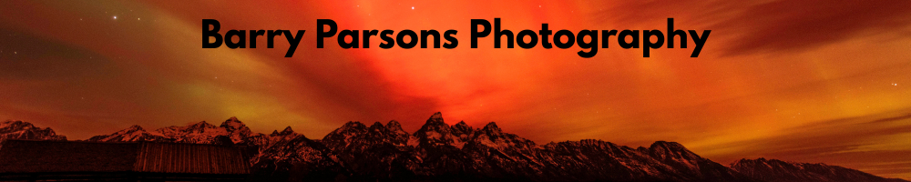
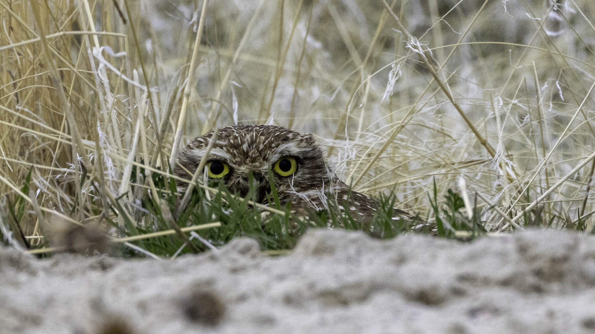
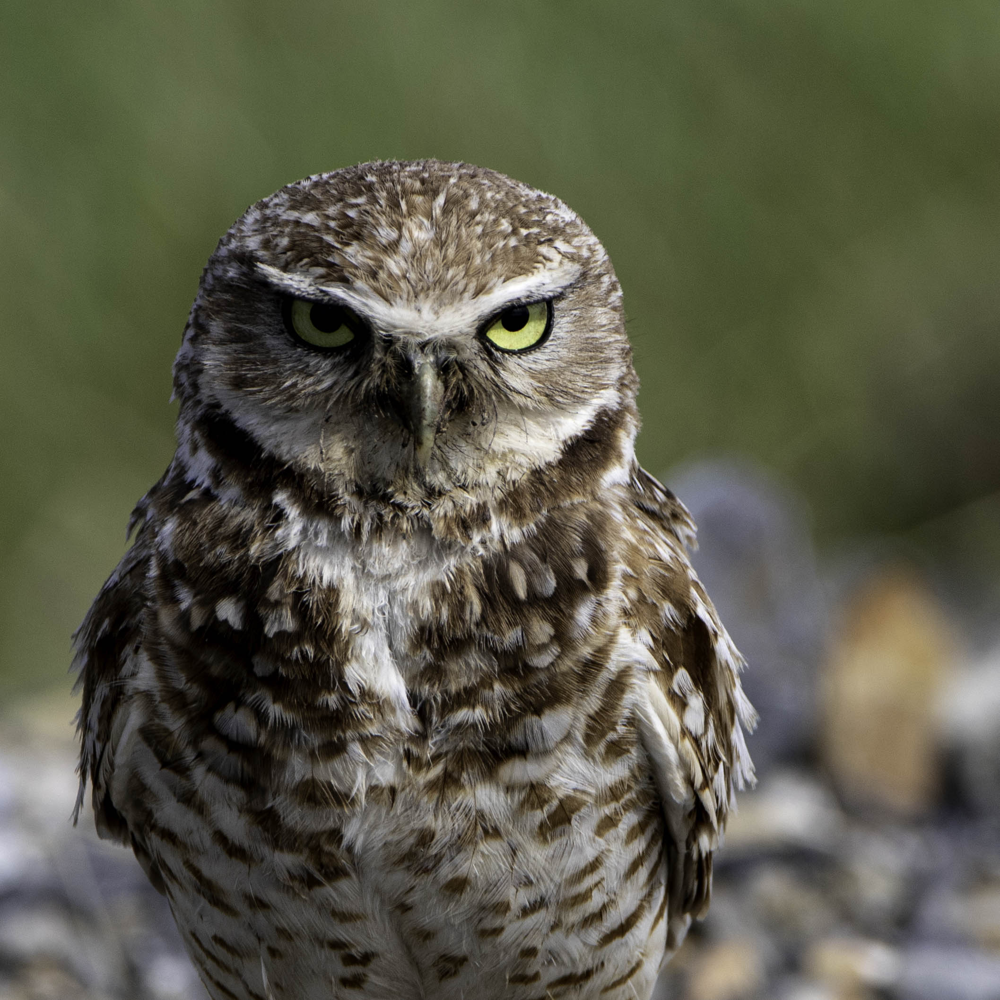

This is a page for Barry Parson's Photography. This page is made with his permission, including his photos and information about his photos.
This is a photo of a Barn Owl, taken at Antelope Island in Utah. This image is titled Hidden in the Grass

This is another photo of a Barn Owl, taken at Antelope Island in Utah. This image is titled Stand Prowd

© Barry Parsons
Website created by a student at Utah State University